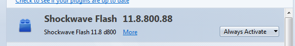
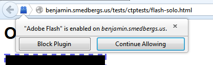
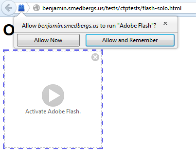
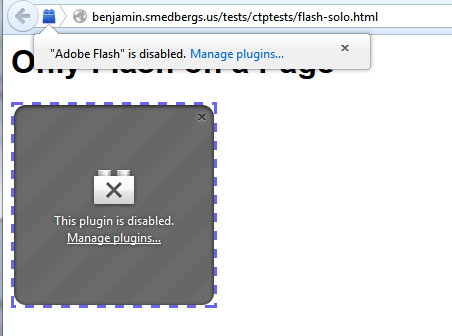
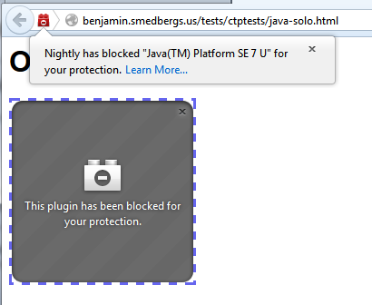
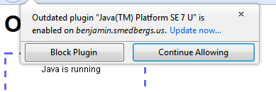
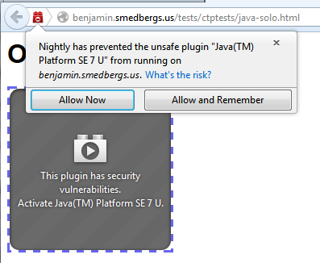
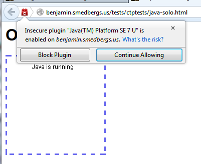
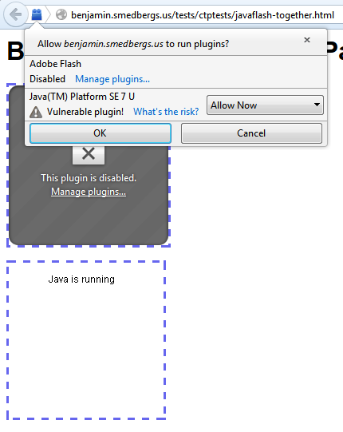
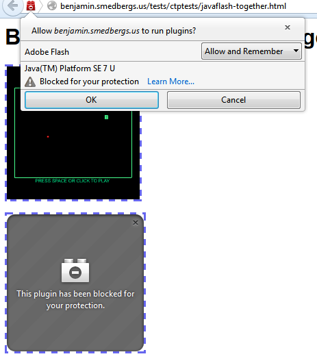

Testing Site for Mozilla Bug 880735
- Setting Up the Blocklist
- Clearing Permissions After Testing
- Single Enabled Plugin
- Single Click-To-Activate Plugin
- Single Disabled Plugin
- Single Hardblocked Plugin
- Single Outdated Plugin
- Single Unsafe Plugin
- Multiple Plugins
This site contains instructions and online resources to aid with testing
and localization of Mozilla bug 880735.
In order to perform these tests, your browser should have two plugins
installed: Java and Flash. Your Flash should be up to date. On Mac, it is
only necessary to have the Apple Java "shim" plugin; it is not necessary to
have Java installed.
Setting Up the Blocklist
Many of the scenarios below involve blocking the Java plugin in different
ways. To do this, first set the extensions.blocklist.url pref in
about:config. Then open the browser console and copy the following
script into the browser console (Control-Shift-J):
Components.classes["@mozilla.org/extensions/blocklist;1"].getService(Components.interfaces.nsITimerCallback).notify(null);
Clearing Permissions After Testing
After testing the doorhanger, you may have unwanted site permissions left
over in your profile. You can remove the plugin permissions from this
website by running the following code in the browser console:
(function() {
let Services = Components.utils.import("resource://gre/modules/Services.jsm", {}).Services;
let allperms = Services.perms.enumerator;
while (allperms.hasMoreElements()) {
let perm = allperms.getNext();
if (perm.type.startsWith('plugin') && perm.host == 'benjamin.smedbergs.us') {
Services.perms.remove(perm.host, perm.type);
console.log("Removed permission " + perm.type);
}
}
return "ok";
})()
Scenarios
Single Enabled Plugin
Flash is enabled by default. Users can also configure other plugins to
run by default in the addons manager.
- Verify in the addon manager that Flash is listed as "Always Activate".

- Load flash-solo.html in the browser.
The Flash game should load automatically.
- The plugin notification should be visible. When opened, it should inform
you that Flash is enabled and give you the option to disable Flash on this
site.

- Choosing "Block Plugin" should make Flash be click-to-activate after
reload.
Strings:
- pluginEnabled.message
- pluginBlockNow.label
- pluginContinue.label
Single Click-To-Activate Plugin
Users can configure any plugin to not run by default but ask on every
site. This will be the default state for all non-Flash plugins in the
future, but that is not yet implemented.
- Go into the addon manager and configure Flash
to be "Ask to Activate".
- Reload flash-solo.html in the browser.
The Flash game should show a click-to-play UI in the page.
- Clicking on the Flash box or the notification icon should show
the plugin notification.

Strings:
- pluginActivateNew.message
- pluginActivateNow.label
- pluginActivateAlways.label
Single Disabled Plugin
Users can disable Flash or any other plugin in the addon manager. In
this case, there is no option to enable the plugin on a per-site basis.
- Go into the addon manager and configure Flash to be "Never Activate".
- Reload flash-solo.html in the browser.
The Flash game should show a disabled UI in the page. There should also
be a link which opens the addons manager.
- Clicking on the Flash box should not show the plugin notification.
- Clicking on the notification icon should show the plugin notification.

Strings:
- pluginActivateDisabled.message
- pluginActivateDisabled.manage
Single Hardblocked Plugin
If a plugin is known to be malicious or harmful, it may be "hard
blocked". This is only used for malware and similar cases, and is not
used for normal plugins even if they have security issues.
- Using the instructions above, set the plugin blocklist to
block-java-hard.xml
and force-reload it.
- Close the dialog box that appears (restart is not necessary).
- Load java-solo.html.
- The plugin should be disabled.
- Clicking in the page should have no effect.
- Opening the plugin notification via the icon should not allow
the user to enable the plugin.

Strings:
- pluginActivateBlocked.message
- pluginActivate.learnMore
Single Outdated Plugin
When a plugin is unsafe and there is an update available, the
primary action we want users to take is to update the plugin.
- Using the instructions above, set the plugin blocklist to
block-java-outdated.xml
and force-reload it.
- Reload java-solo.html.
- The plugin should be listed as vulnerable and there should be links
to check for plugin updates.
- Clicking the plugin should open the plugin notification.
Screenshot unavailable due to bug 886940.
- Go ahead and click "Allow Now". The plugin should start.
- Click the notification icon again. The plugin should still be listed
as outdated and the update link should still appear. The user has the
option to block the plugin.

- When finished testing, clear all permissions using the code above.
Strings:
- pluginActivateBlocked.message
- pluginActivateAlways.label
- pluginActivateNow.label
- pluginEnabledOutdated.message
- pluginBlockNow.label
- pluginContinue.label
Single Unsafe Plugin
When a plugin is unsafe and there is no update available, we
want users not to use the plugin. Unfortunately the plugin may be
necessary, so we attempt show them the risks and ask them.
- Using the instructions above, set the plugin blocklist to
block-java-vulnerable.xml
and force-reload it.
- Reload java-solo.html.
- The plugin should be listed as vulnerable and there should be links
to more information about the block.
- Clicking the plugin should open the plugin notification.

- Go ahead and click "Allow Now". The plugin should start.
- Click the notification icon again. The plugin should still be listed
as vulnerable and the details link should still appear. The user has the
option to block the plugin.

- When finished testing, clear all permissions using the code above.
Strings:
- pluginActivateVulnerable.message
- pluginActivateAlways.label
- pluginActivateNow.label
- pluginEnabledVulnerable.message
- pluginBlockNow.label
- pluginContinue.label
Multiple Plugins
When multiple kinds of plugins are loaded on the same page, the
notification UI becomes more complicated, and allows users to choose the
enabled state of each plugin separately. This case is hopefully quite
rare.
The page javaflash-together.html
includes both Java and Flash on a single page, for testing this UI.
Complete testing will require repeating the above scenarios for plugins
which have the following states:
- Enabled
- Click-to-activate
- Disabled
- Hardblocked
- Outdated
- Unsafe
When clicking the in-page plugin, just the information for that plugin
will appear in the notification, along with a button to show all plugins:

When clicking the notification icon itself, all plugins should be shown:


Strings:
- PluginActivateMultiple.message
- pluginActivate.learnMore
- pluginActivateOutdated.label
- pluginActivate.updateLabel
- pluginActivateVulnerable.label
- pluginActivate.riskLabel
- pluginActivateBlocked.label
- pluginActivateDisabled.label
- pluginNotification.showAll.label
Hidden and Covered Plugins
When plugins are too small to show the normal click-to-play content, or
are completely hidden on the page, we replace the normal click-to-play
overlay with an information bar so that the user can discover that the
site wishes to use a plugin.
Here are some pages which test variations of this behavior: